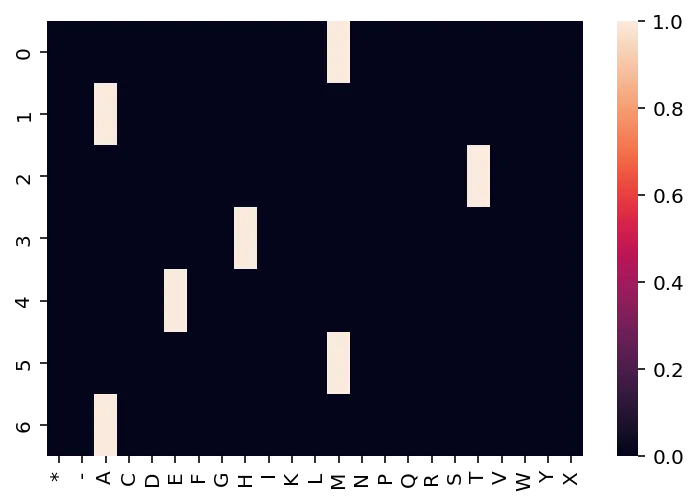
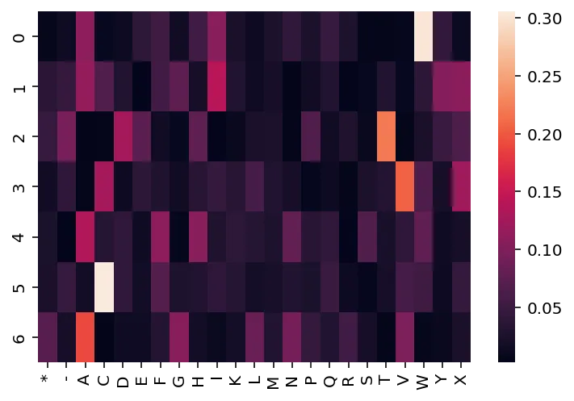
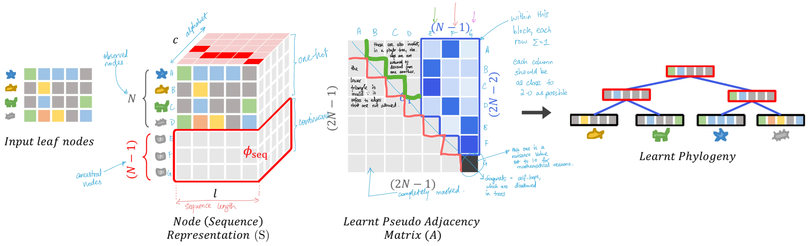
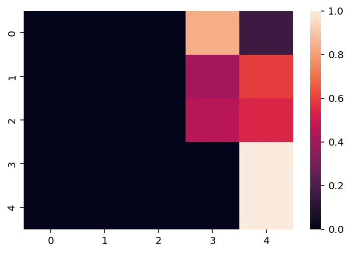
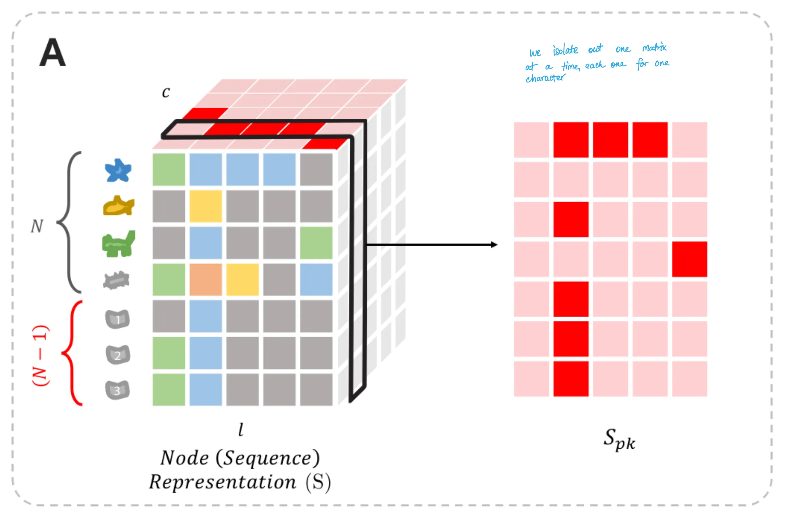
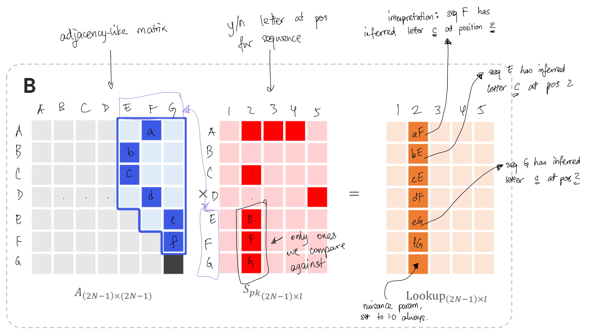
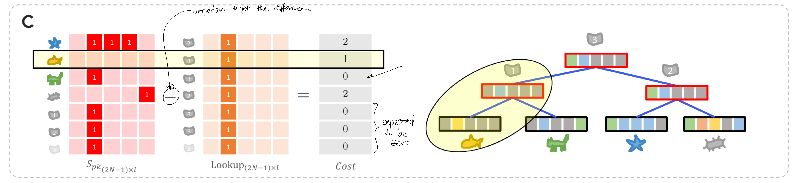

written by Eric J. Ma on 2023-08-07 | tags: machine learning phylogenetics protein engineering protein sequences ancestral sequences bioinformatics computational biology deep learning differentiable computing gradient-based optimization phylogenetic trees sequence representation tree adjacency vae protein design jax python
I've just explored a fascinating paper on differentiable search of evolutionary trees. It's a creative blend of math and biology, using mathematical structures to solve a biological problem. The authors have developed a way to infer both phylogenetic trees and ancestral protein sequences in a continuous, differentiable manner. This opens up exciting new avenues for protein engineering and design. Plus, the paper's figures are top-notch! 🧬🌳📊
from jax import random import jax.numpy as np from seqlike import aaSeqLike import seaborn as sns import jax.numpy as np from jax import vmap from jax.nn import softmax
Once in a while, I find a research paper that is unique and creative -- one that is not just a matter of brute force scaling but uses mathematical links creatively to solve a biological problem. "Differentiable Search of Evolutionary Trees" is one such paper, and I'm very happy for the authors Ramith Hettiarachchi, Avi Swartz, and Sergey Ovchinnikov that it was accepted to ICML 2023! (It was specifically accepted to the Sampling and Optimization in Discrete Space (SODS) and Differentiable Almost Everything (DiffAE) workshops.)
I thought it would be worth sharing the methodology, with a specific focus on how the authors take a non-differentiable problem and turn it into a differentiable problem through interconversion between mathematical data structures.
It's challenging to find a phylogenetic tree that explains the existence of a collection of sequences -- the problem is NP-complete, and the space of possible trees is combinatorially large. Moreover, the discrete nature of phylogenetic trees makes tree generation inherently non-differentiable. Yet, we should be able to make phylogenetic tree search differentiable. So how do we do that?
The answer to that question is the premise of this paper. The key idea here is to recognize that:
Let's explore these ideas a bit more.
To start, we should know one definition of a phylogenetic tree: Given $N$ observed sequences (also known as "leaves" in the tree), there will be $N-1$ ancestral sequences that are assumed to exist. This comes from the definition of a phylogenetic tree as a bifurcating tree, which implies that each ancestral sequence gives rise to two children sequences, which can either be ancestral themselves or the observed sequences.
Now, the observed sequences can be represented as a one-hot encoded matrix. Using SeqLike to create the object, we can convert it to a one-hot encoding easily:
aaSeqLike("MATHEMA").to_onehot()
array([[0, 0, 0, 0, 0, 0, 0, 0, 0, 0, 0, 0, 1, 0, 0, 0, 0, 0, 0, 0, 0, 0,
0],
[0, 0, 1, 0, 0, 0, 0, 0, 0, 0, 0, 0, 0, 0, 0, 0, 0, 0, 0, 0, 0, 0,
0],
[0, 0, 0, 0, 0, 0, 0, 0, 0, 0, 0, 0, 0, 0, 0, 0, 0, 0, 1, 0, 0, 0,
0],
[0, 0, 0, 0, 0, 0, 0, 0, 1, 0, 0, 0, 0, 0, 0, 0, 0, 0, 0, 0, 0, 0,
0],
[0, 0, 0, 0, 0, 1, 0, 0, 0, 0, 0, 0, 0, 0, 0, 0, 0, 0, 0, 0, 0, 0,
0],
[0, 0, 0, 0, 0, 0, 0, 0, 0, 0, 0, 0, 1, 0, 0, 0, 0, 0, 0, 0, 0, 0,
0],
[0, 0, 1, 0, 0, 0, 0, 0, 0, 0, 0, 0, 0, 0, 0, 0, 0, 0, 0, 0, 0, 0,
0]])
Visualized, it will look like this:
alphabet = aaSeqLike("MATHEMA").alphabet ax = sns.heatmap(aaSeqLike("MATHEMA").to_onehot()) ax.set_xticklabels(alphabet);

By default, SeqLike will construct the matrix such that positions are rows and letters are columns. However, that matrix can also be transposed if desired.
One-hot encodings are a discrete representation; however, we can relax it to be a continuous representation by ensuring that each position (column) is a probability vector that sums to 1.0. Doing so gives us a position-specific weight matrix (PSWM) (or the position-specific probability matrix). This is the first trick the authors used to convert a discrete problem into a continuous problem.
In contrast to the observed sequences, the $N-1$ ancestral sequences are not precisely known, so we use a PSWM to represent them. PSWMs can be visualized like this:
from jax import random, nn key = random.PRNGKey(22) k1, k2 = random.split(key) logits = random.normal(k1, shape=(len("MATHEMA"), len(alphabet))) probs = nn.softmax(logits, axis=-1) ax = sns.heatmap(probs) ax.set_xticklabels(alphabet);

Phylogenies, however, don't operate with just one observed sequence; there usually are a handful of sequences. For illustrative purposes, we will generate and use three observed sequences throughout this post.
observed_sequences = np.array( ( aaSeqLike("MATHEMA").to_onehot(), aaSeqLike("MATHIMA").to_onehot(), aaSeqLike("MITHIMA").to_onehot(), ) )
A phylogenetic tree is a directed acyclic graph (DAG). Every graph can be represented as a matrix, such that nodes are ordered identically on the rows and columns. Since we are talking about directed graphs, we can treat the rows as "source" nodes and the columns as "target" nodes. In the case of a DAG, we only need to consider the upper triangle; due to the acyclic property of a DAG, we never need edges from the target nodes back to the source nodes. As such, for a tree (which is a DAG), we're able to always find a topological sort of the nodes, and hence only need the upper right triangle.
Here's an example. This tree, which has 5 nodes (3 observed, A-C and 2 ancestral, D & E), looks like this in tree form:
E / \ D B / \ A C
That same tree, in matrix form, (with rows being children and columns being parents to maintain conventions):
A B C D E A x i i 1 0 B x x i 0 1 C x x x 1 0 D x x x x 1 E x x x x x
Here, a value of
1 indicates that the row is a child of the column,0 indicates the absence of that relationship,x fills the lower left triangle because those are not applicable to trees, andi fills the invalid relations between observed sequences.If you're being astute and thinking ahead a few steps,
you'll quickly come to the realization that the 1s and 0s above
are the positions of the parameterizable parts of the tree model.
Those entries in the matrix are the ones that we need to infer
in order to find the best tree for a given collection of observed sequences.
Here are other observations that we can make:
Doing so gives us the following tensors, as illustrated in the paper (with my own annotations added for clarity):

In the figure above, Figure 3 from the paper, the observed sequences are the input leaf nodes on the left. From there, we construct the one-hot representation of the sequence, which gives us an interpretable embedding of the sequences, and we also add $N-1$ ancestral nodes into the matrix, parameterizing them to be optimizable. We've touched on these before. What's most important for this section is the 3rd item in the figure: the adjacency matrix. The characteristics described above are clearly visible here.
So how do we relax the restrictions of this matrix to be continuous and hence differentiable?
The fundamental trick is identical to that of sequence representations:
instead of a row of 0s and 1s, we allow floats,
subject to the restriction that they must sum to 1.0.
Doing so satisfies the property that each row must sum to 1
and affords us the interpretation that each entry in a row is the probability of an edge showing up.
This is enforceable using the softmax function applied to each row.
The resulting matrix would look like this:
A B C D E A x i i 0.9 0.1 B x x i 0.2 0.8 C x x x 0.8 0.2 D x x x x 1.0 E x x x x x
In JAX, here's how we construct such a matrix. Because of the nature of gradient-based optimization, we often need to operate in infinite support space, which means initializing a square array that looks like this:
N = len(observed_sequences) shape = (2*N-1, 2*N-1) key = random.PRNGKey(22) params = random.normal(key, shape=shape) params
Array([[ 0.7082089 , -0.49484855, -1.5541736 , 1.8314509 , 0.15443915],
[ 0.46382412, 1.0662364 , -1.237933 , -0.7060505 , -0.3103692 ],
[ 1.4750988 , -1.3629559 , 0.3568244 , -0.1817721 , -0.0103011 ],
[-0.9509461 , -0.53857976, 0.19372661, -1.9654351 , 0.8330064 ],
[ 1.0176847 , 0.24268225, -1.521127 , 1.3994535 , -1.7868598 ]], dtype=float32)
Doing so allows us to adjust the values by gradient descent without worrying about hitting invalid values. We use differentiable mathematical transforms, such as the softmax function, to help us convert parameters from infinite support space back to finite support.
We'll also need an adjacency matrix mask that masks all invalid parameters. This is constructed using a function that looks like this:
def tree_adjacency_mask(N: int): shape = (2*N-1, 2*N-1) ninfs = np.tril(np.full(shape, np.NINF)) first_N = np.full(shape=(2*N-1, N), fill_value=np.NINF) next_N = np.full(shape=(2*N-1, N-1), fill_value=0.0) adj_mask = np.hstack([first_N, next_N]) + ninfs adj_mask = adj_mask.at[-1,-1].set(1) return adj_mask mask = tree_adjacency_mask(N) mask
Array([[-inf, -inf, -inf, 0., 0.],
[-inf, -inf, -inf, 0., 0.],
[-inf, -inf, -inf, 0., 0.],
[-inf, -inf, -inf, -inf, 0.],
[-inf, -inf, -inf, -inf, 1.]], dtype=float32, weak_type=True)
If we apply the mask to our params and then apply the softmax function row-wise:
branch_probabilities = vmap(softmax)(params + mask) branch_probabilities
Array([[0. , 0. , 0. , 0.84250844, 0.15749158],
[0. , 0. , 0. , 0.4023504 , 0.5976496 ],
[0. , 0. , 0. , 0.45723698, 0.54276305],
[0. , 0. , 0. , 0. , 1. ],
[0. , 0. , 0. , 0. , 1. ]], dtype=float32)
Thereby giving us the matrix that satisfies the first criteria -- DAG upper triangle with probabilities of edges existing between ancestral nodes or between them and leaf nodes. Visualized, it'll look like this:
sns.heatmap(branch_probabilities)

But if each row must sum to 1.0, how do we guarantee that each column must sum to 2.0?
Finding two functions, such that one is applied row-wise and the other column-wise, such that two conditions are satisfied, is difficult to find analytically. Is there an alternative approach?
Yes, there is, and that's where we go to the loss function.
But what if we relaxed the problem and said that each column must approximately sum to 2.0? If we do so, we can turn the problem into an optimization problem. That's where Equation 3 in the paper helps.
Implemented in JAX, it'll look something like this:
def tree_branch_loss(branch_probabilities: np.ndarray): N = int((branch_probabilities + 1) / 2) # Create a NumPy array mask. This effectively stops gradients from flowing. mask = np.concatenate([np.zeros(N), np.ones(N-1)]) col_wise_loss = np.abs(np.sum(branch_probabilities, axis=0) - 2) loss = np.sum(col_wise_loss * mask) return loss
This is a loss term that effectively acts like a regularizer.
It pulls the sum of the column values closer and closer to the target value of 2.
With this loss term,
each parameterized entry (non-i and non-x above) in the learned adjacency matrix
has two forces acting on it,
one being the "sum to 2.0" force acting column-wise,
and the other being the maximum parsimony force acting row-wise.
So what is this maximum parsimony force? Where is that loss term coming from?
Remember that the premise of constructing a maximum parsimony phylogenetic tree is to find the tree that explains the existence of the observed sequences while minimizing the number of mutations induced. This means that we also infer the ancestral sequences while constructing the tree. That is where the parsimony loss function comes in.
The parsimony loss term is constructed by taking the inferred ancestral sequence and diffing it from its parent. How do we do that?
To do that, we need to first see how the node sequence representation matrix is constructed.
Recall that with $N$ observed sequences, we will have $N-1$ ancestral nodes. The observed sequences are precisely known and hence take on a one-hot representation. On the other hand, the ancestral sequences are not precisely known and need to be inferred. As such, they need to be represented using a position-specific probability matrix, more commonly known as a position-specific weight matrix (PSWM). Let's see how this gets constructed.
To begin, let's start with the observed sequences:
observed_sequences
Array([[[0, 0, 0, 0, 0, 0, 0, 0, 0, 0, 0, 0, 1, 0, 0, 0, 0, 0, 0, 0, 0,
0, 0],
...
[0, 0, 1, 0, 0, 0, 0, 0, 0, 0, 0, 0, 0, 0, 0, 0, 0, 0, 0, 0, 0,
0, 0]]], dtype=int32)
With its shape being:
observed_sequences.shape
(3, 7, 23)
Then, we initialize the ancestral sequences as a random tensor, and apply the softmax transform to convert it to a PSWM.
from jax import random from jax.nn import softmax k3, k4 = random.split(k2) ancestral_sequences_logit = random.normal(k3, shape=(len(observed_sequences) - 1, len("MATHEMA"), len(alphabet))) ancestral_sequence_probs = softmax(ancestral_sequences_logit, axis=2) ancestral_sequence_probs
Array([[[0.05529984, 0.09550589, 0.05429629, 0.05502843, 0.05728496,
0.07386164, 0.14299779, 0.0227186 , 0.02109059, 0.01895124,
0.03934288, 0.0723261 , 0.02412836, 0.030231 , 0.00949756,
0.00631911, 0.00572626, 0.13230364, 0.02543964, 0.03110287,
0.00736431, 0.00669383, 0.01248925],
...
[0.00170834, 0.00756833, 0.0193548 , 0.00484694, 0.02180319,
0.03584868, 0.03202888, 0.0341184 , 0.04679569, 0.08443339,
0.0085059 , 0.02014623, 0.00671417, 0.02273462, 0.05624866,
0.0476648 , 0.01502691, 0.0055133 , 0.07164659, 0.2207129 ,
0.03011633, 0.02939364, 0.17706925]]], dtype=float32)
We can then concatenate (vstack) the two together:
node_representation_matrix = np.vstack([observed_sequences, ancestral_sequence_probs]) node_representation_matrix
Array([[[0.00000000e+00, 0.00000000e+00, 0.00000000e+00, 0.00000000e+00,
0.00000000e+00, 0.00000000e+00, 0.00000000e+00, 0.00000000e+00,
0.00000000e+00, 0.00000000e+00, 0.00000000e+00, 0.00000000e+00,
1.00000000e+00, 0.00000000e+00, 0.00000000e+00, 0.00000000e+00,
0.00000000e+00, 0.00000000e+00, 0.00000000e+00, 0.00000000e+00,
0.00000000e+00, 0.00000000e+00, 0.00000000e+00],
...
[1.70834339e-03, 7.56833283e-03, 1.93547998e-02, 4.84694401e-03,
2.18031872e-02, 3.58486772e-02, 3.20288837e-02, 3.41183990e-02,
4.67956886e-02, 8.44333917e-02, 8.50589760e-03, 2.01462265e-02,
6.71416940e-03, 2.27346178e-02, 5.62486649e-02, 4.76647951e-02,
1.50269121e-02, 5.51329739e-03, 7.16465861e-02, 2.20712900e-01,
3.01163271e-02, 2.93936413e-02, 1.77069247e-01]]], dtype=float32)
And just to check its shape:
node_representation_matrix.shape
(5, 7, 23)
It's what we expect: 5 (3 observed + 2 ancestral) sequences, 7 positions, 23 alphabet characters.
As such, we get the node representation matrix from Figure 6A. (Figure 6 is reproduced below, with my own hand-written annotations on top.)

With that, we can go back to seeing how the parsimony loss is calculated.
For every amino acid letter $k$,
we can isolate the (sequence x position) matrix (named $S_{pk}$),
in which each entry is the probability of observing that letter $k$
at that position $p$.
(Figure 6A)
For example,
from the node_representation_matrix above,
the character M's position would look like this:
S_pk = node_representation_matrix[:, :, alphabet.index("M")] S_pk
Array([[1. , 0. , 0. , 0. , 0. ,
1. , 0. ],
[1. , 0. , 0. , 0. , 0. ,
1. , 0. ],
[1. , 0. , 0. , 0. , 0. ,
1. , 0. ],
[0.02412836, 0.02081719, 0.02660132, 0.04159116, 0.03831984,
0.02087471, 0.09509952],
[0.03010988, 0.01445912, 0.03894024, 0.1212726 , 0.2428476 ,
0.0225838 , 0.00671417]], dtype=float32)
As a reminder, our sequences were MATHEMA, MATHIMA, and MITHIMA, so the index 0 and 5 positions (columns) in the matrix should be 1.0 (which is what we observe). When reconstructing the ancestral sequences, we would optimize their matrix values for parsimony.
Now, by taking the dot product of the learned adjacency $A$ with $S_{pk}$,
we effectively get a lookup table $L$ of shape (sequence x position).
adjacency_matrix = vmap(softmax)(params) S_pk = node_representation_matrix[:, :, alphabet.index("M")] lookup_table = np.dot(adjacency_matrix, S_pk) lookup_table
Array([[0.29598033, 0.01430949, 0.02061273, 0.039096 , 0.05093228,
0.2931449 , 0.05862169],
[0.8015775 , 0.00347282, 0.00693362, 0.01820618, 0.03276558,
0.80039245, 0.00862753],
[0.7749123 , 0.00401895, 0.00770602, 0.01963376, 0.03455837,
0.7736227 , 0.01090632],
[0.48796257, 0.00782338, 0.02017675, 0.06158708, 0.1219654 ,
0.48412016, 0.0062212 ],
[0.5144516 , 0.01023462, 0.01348249, 0.02227255, 0.02311018,
0.512748 , 0.04558302]], dtype=float32)
The unique property of that lookup table is that it is probabilistic in the relaxed case. Let's think about why - by looking at how each entry in that table is calculated. (Figure 6B)

We first calculate the probability of an edge and multiply it by the probability of observing the letter $k$ at a position, thus giving the joint probability of the two terms. Then we sum up the terms to give us the total probability of jointly observing that letter and that edge.
We get the total difference between the observed sequence and its ancestor by taking the difference between $S_{pk}$ and $L$. (Figure 6C)

# NOTE: taking the absolute value of the difference is necessary; # we need the differences, which are errors, to add up without canceling out each other. # I have verified this point with the original author, Ramith. diff = np.abs(S_pk - lookup_table) diff
Array([[0.70401967, 0.01430949, 0.02061273, 0.039096 , 0.05093228,
0.70685506, 0.05862169],
[0.19842249, 0.00347282, 0.00693362, 0.01820618, 0.03276558,
0.19960755, 0.00862753],
[0.2250877 , 0.00401895, 0.00770602, 0.01963376, 0.03455837,
0.22637731, 0.01090632],
[0.46383423, 0.01299381, 0.00642458, 0.01999593, 0.08364556,
0.46324545, 0.08887832],
[0.48434174, 0.0042245 , 0.02545775, 0.09900005, 0.21973743,
0.4901642 , 0.03886886]], dtype=float32)
Summing this up, then, is the cost function for parsimony:
np.sum(diff) / 2
Array(5.0915833, dtype=float32)
Note: Having asked Ramith to check the accuracy of my blog post, he reminded me that division by two is necessary to ensure that we don't double-count differences. This is due to the diff being accounted for in both the corresponding amino acid's slice of the matrix and another time in the sum of the rest of the matrix. Mathematically, this is more precise, though for the purposes of optimization, division by two induces no changes in the partial derivative except for its magnitude.
And now, we do this for every single letter:
from functools import partial lookups = vmap(partial(np.dot, adjacency_matrix), in_axes=2, out_axes=2)(node_representation_matrix) parsimony_loss = np.sum(node_representation_matrix - lookups) parsimony_loss
Array(-6.4074993e-07, dtype=float32)
The smaller we can make the difference, the better the ability of the joint distribution over the tree and inferred sequences to explain the observed sequences. And since $S_{pk}$ represents the sequence, the loss function affects the probabilistic portion of the sequence tensor above (the bottom rows) and the parameterized part of the adjacency matrix!
Thus, by combining the two losses together -- the bifurcating tree loss and the tree parsimony loss, we can jointly infer ancestral sequences and phylogenetic trees in continuous space.
I'll note that jointly inferring trees and ancestral sequences is not new. This has been done in discrete space, with many decades of algorithm development work. The novelty in this paper, though, is the ability to jointly infer trees and ancestral sequences in a continuous and differentiable fashion, which now opens up many avenues of research.
The first and most apparent extension to this paper
is to incorporate evolutionary rate models.
This is where one simultaneously infers the tree
alongside the rate at which amino acids in each position mutate between one another.
The rate parameter set is usually expressed as a tensor of $\theta$s
of shape (sequence length, alphabet size, alphabet size),
its shape implying one transition matrix learned per position
or a position-specific substitution matrix (PSSM).
Since these rates are continuous parameters,
and since we usually impose a continuous likelihood
(e.g. a gamma or exponential distribution) for these rates,
then one can, in principle, include the joint likelihood of the parameters
as part of the optimization objective and hence,
jointly infer the tree, site-specific evolutionary rates,
and ancestral sequences together.
Since the entire optimization problem is done in continuous space with a likelihood-based loss, we can swap out gradient-based optimization with MCMC sampling instead and, in turn, obtain posterior distributions on trees, rates, and ancestral sequences. Depending on the complexity of the loss landscape, we can get away with using Langevin dynamics or Hamiltonian Monte Carlo samplers, both of which take advantage of gradients for sampling.
With a posterior distribution on ancestral sequences, we can sample out new sequences for protein engineering. There is emerging literature that suggests that ancestral sequence reconstruction (ASR) may be advantageous for protein engineering. Once we have a posterior on ancestral sequences, we should be able to sample out exact ancestral sequences by sampling from the posterior distribution on letters at each sequence.
The next level of ideas brimming in my head includes probing the connection between sequences sampled from a VAE and sequences sampled from a posterior distribution on ancestral sequence reconstruction. Having worked with VAEs and protein sequences before, it's likely (but not proven, at least in my head) that VAEs are learning an implicit distribution over ancestral sequences. In contrast, a posterior ASR distribution would be an explicit distribution over ancestral sequences. I would love to see the differences between the two methods regarding sampled sequences.
The final thing I can think of is figuring out how to integrate the learned phylogeny into protein engineering and design. We can use differentiable phylogenies as part of a library design strategy that optimizes for functional activity of an enzyme. That said, how exactly isn't 100% clear to me at this point, which is why it's a direction for the future.
Once in a while, an excellent paper comes along that uses mathematical tricks in a new way, bridges two ideas, and opens up new avenues of research. Even more remarkable is that the lead author of this paper did it while an undergraduate! Kudos, Ramith -- very well done!
I also want to comment on the figures: this paper's figures are the best! It's clear to me that the authors strove for clarity in their writing. They used diagrams to illustrate the linear algebra operations involved, and those diagrams used minimally complicated examples. Compared to the many machine learning papers I've read over the years, this one sets the bar for clear communication. Commendable work!
Finally, the topic and choice of methods: this was another example of sitting down and thinking hard about the generative model that backs a biological data structure rather than throwing raw modelling power, and hence billions of parameters, at the problem. I enjoy this type of research! Amongst the work surrounding differentiable computing, this level of model building is the most mechanistic and creative.
@article{
ericmjl-2023-journal-club-differentiable-search-of-evolutionary-trees,
author = {Eric J. Ma},
title = {Journal Club: Differentiable Search of Evolutionary Trees},
year = {2023},
month = {08},
day = {07},
howpublished = {\url{https://ericmjl.github.io}},
journal = {Eric J. Ma's Blog},
url = {https://ericmjl.github.io/blog/2023/8/7/journal-club-differentiable-search-of-evolutionary-trees},
}
I send out a newsletter with tips and tools for data scientists. Come check it out at Substack.
If you would like to sponsor the coffee that goes into making my posts, please consider GitHub Sponsors!
Finally, I do free 30-minute GenAI strategy calls for teams that are looking to leverage GenAI for maximum impact. Consider booking a call on Calendly if you're interested!